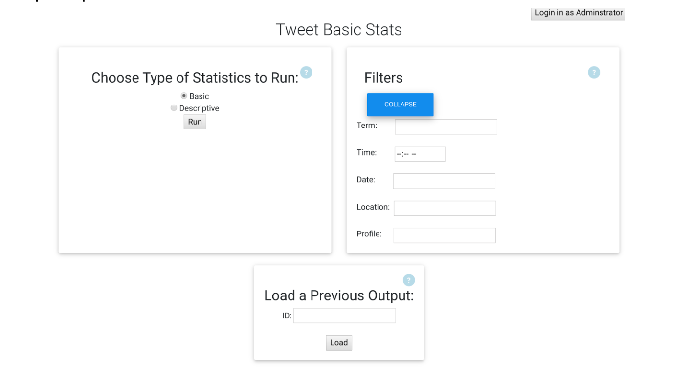
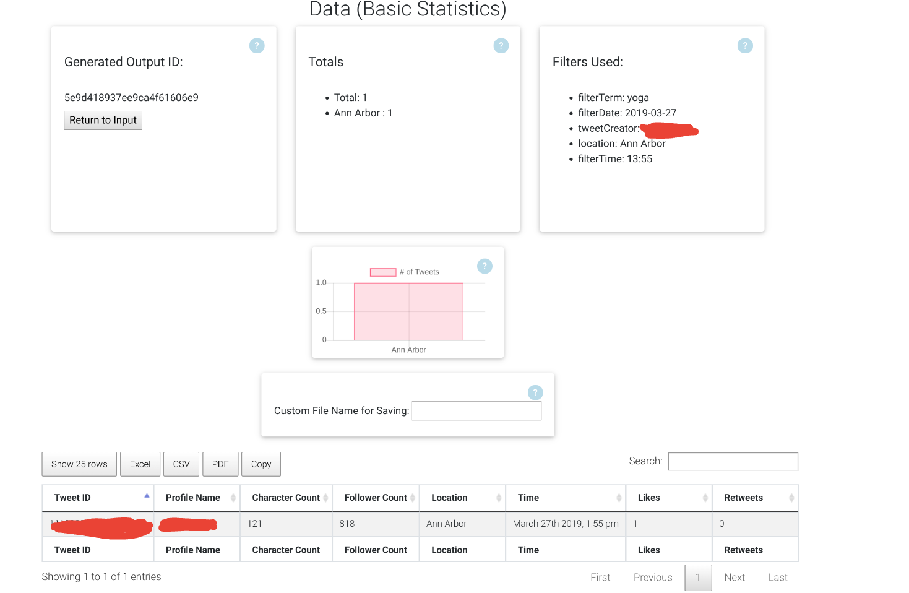
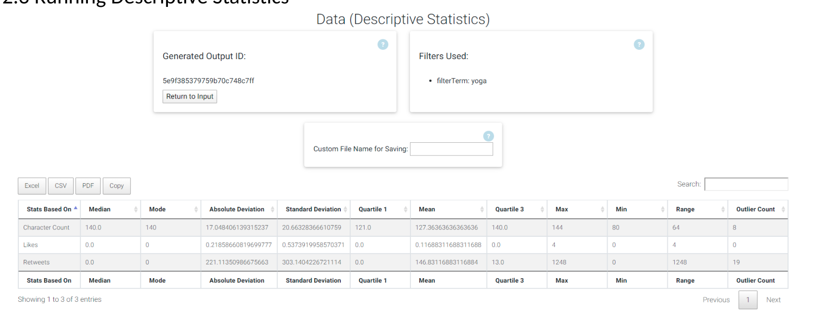
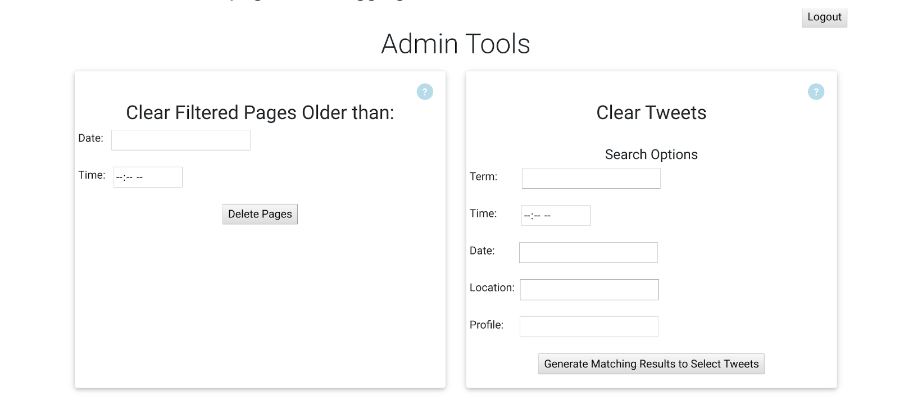

Michael McGaffick
Computer Science Graduate, Aspiring Software Developer
Capstone Project
About
This project was a 24 week long group project created for my Computer Science Capstone 1-2 courses. The project was created for an actual customer and completed in a remote mock professional environment that followed an Agile Methodology. The project itself stored Tweets from a set period of time into a MongoDB database using a PHP script. We designed a tool that ran using the Flask framework that allowed the user to query the database on different filter options and analyze the matching tweets with basic and descriptive statistics. It also provided ways to graph the results, save them to a file, and manage the database by updating, deleting, and modifying records. The tool was designed with the following languages: Python, Javascript, HTML/CSS, Jinja, and JSON. The project was designed to communicate with REST APIs between the front-end and back-end in the Flask framework. We utilized various tools to work remotely such as video calls (Skype/Zoom), Slack, shared files systems (Google Drive), and version control (git/github).
Sprints
We developed the project over 5 sprints that will be described below.
Sprint 1
The first sprint was focused on gathering and refining the requirements. First, we determined which of the projects we were going to pursue based on project proposal presentations. Afterwards, we met with the customer remotely and determined what functionality was needed. We drafted up a project requirements document and continued to iterate on it until we had approval from the customer. This was also the sprint that we had meetings for group expectations, what the sprints were going to be about, and the schedule for weekly meetings. During this sprint, we determine what software, database, and framework would be used.
Sprint 2
The second sprint was about creating design documents for the project before programming. We drafted up multiple documents that detailed our planned inputs and outputs, methods, user interface mock-ups, and objects for the project. In addition to the programming design documents, we also created a RAID document to prepare for risks, priority list for functionality, backlog to manage coding implementations, unit tests documents, and began monthly status report presentation. We continued to check in with the customer while presenting our artifacts and we continued to update our documents throughout the rest of the project.
Sprint 3
The third sprint was focused on programming basic functionality. This was where the database and tool itself were created to run the needed functionality. The other group member focused on connecting the database, retreiving the Tweets, and setting up the storage of Tweets. I focused on designing and implementing the user interface as well as the methods that performed the analysis on the query. I also set up the REST APIs to send data between the front-end and the back-end. At the end of this sprint, we presented the project with the customer and added additional requirements as they came up for the following sprint.
Sprint 4
This sprint revolved around adding additional functionality that was not as high priority. The other group member focused on improving performance with server-side processing during this sprint while I added additional functionality to the results such as being able to graph, save the results to a file, and setting up an Admin login section with the ability to manage the database.
Sprint 5
The final sprint was about polishing the final design and testing. During this sprint, we finished up the admin functionality, cleaned up the user interface, and refactored the code. We tested our project multiple times with the planned unit tests before we ultimately had to present that it performed correctly with the customer. This was also the phase of development where additional documentation was created and finished such as the user manual.
Results
Our project successfully passed the required test cases based on our project specifications, our customer was satisified with the work, and we received full credit for our project (A).
Gallery



